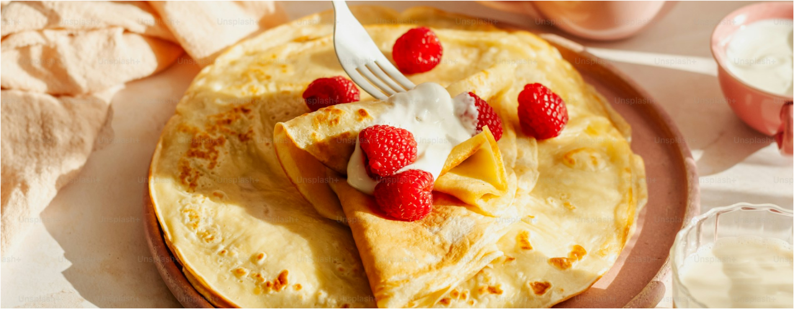

Enkelt recept på pannkakor!
Gör traditionella tunna pannkakor med detta enkla och goda recept.
Ingredienser
För 10–12 pannkakor
- 3 dl vetemjöl
- 3 ägg
- 6 dl mjölk
- 2 msk smör, smält
- 0,5 tsk salt
- ev 1 tsk strösocker
- smör, till stekning
Så här gör du
- Blanda mjöl och salt i en bunke.
- Vispa i hälften av mjölken tills smeten blir slät.
- Vispa i resten av mjölken och addera nu äggen.
- Låt smeten vila i 10 minuter.
- Stek pannkakorna tunna i lite smör, i en stek- eller pannkakspanna.
- Servera med sylt, bär eller frukt.
Serveringsförslag